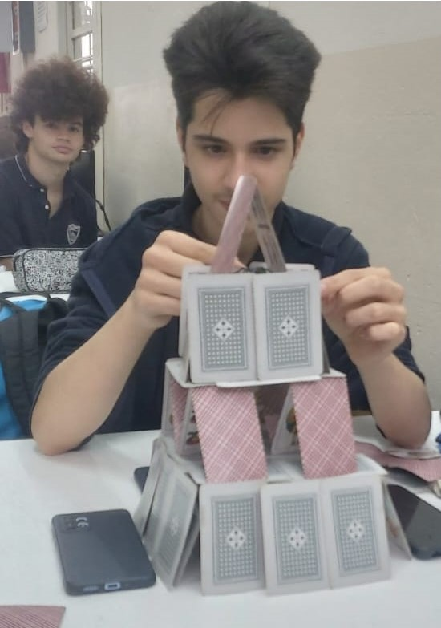
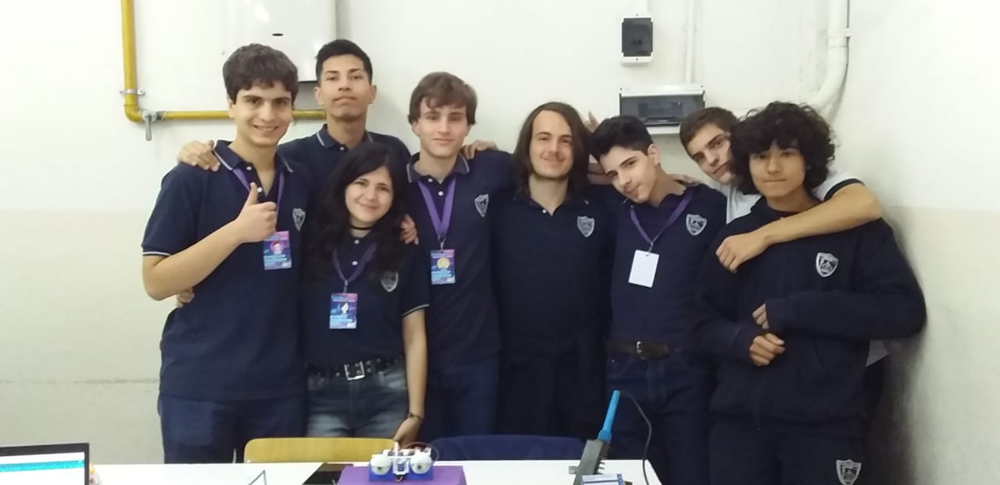

Sobre Nosotros
En Mewtronics, somos apasionados por la tecnología. Fundada en 2023, nuestra misión es crear productos que no solo mejoren la vida cotidiana, sino que también integren una buena estética.
Nuestro equipo está formado por estudiantes que trabajan juntos en el día a día para desarrollar soluciones innovadoras y seguras. Creemos en un futuro donde la tecnología y el amor se unen para modernizar con maquinaria única y positiva.
Socios fundadores
-
Carla Maciel - Mentora principal y representante legal
La profesora Carla Maciel nos aporta su sabiduria y experiencia en electronica y participacion en ferias y eventos. También es nuestra profesora asignada para representarnos en eventos escolares.
Brenda Tamara Gamboa Arellano Barreira - Diseñadora grafica, researcher y programadoraBrenda es la diseñadora del Branding y estética del emprendimiento. También desempeña en rol de investigadora de nuevas tecnologías para integrar en los proyectos.
Participación en proyectos: Todos
Gonzalo Bardauil - Diseñador Electrónico, planificador y "soñador"Gonzalo se especializa en el diseño electrónico de los proyectos y la planificacion de pruebas y prototipos. Se lo acusa de "soñador" por tener ideas muy dificiles de llevar a cabo, según sus compañeros.
Participación en proyectos: Todos
Santiago Nicolás "Paco" Pavicich - Especialista en ensambleje y asistente técnicoPaco desempeña tareas de ensamblaje y armado de las cajas o los chasis que contienen la circuitería. También asiste para cuestiones de pruebas y prototipos.
Participación en proyectos: Ojos Animatrónicos y R.A.D.
Benicio Mario Oritiz - Diseñador de mecanismos y de planos esqumáticos Benicio, generalmente se encarga de las tareas manuale, como montaje de chasis, mecanismos, etc. Tiene gran habilidad para el dibujo de planos y esquemáticos.
Participación en proyectos: Ojos Animatrónicos y Dron Submarino
Asociados
-
Nicolás Monetti - especialista en impresion 3D
Participación en proyectos: Dron Submarino
Hola profe, te incluimos en el equipo. Nos pones un 10? ;)
HISTORIA
Mewtronics es un emprendimiento creado por estudiantes en 2023, con el objetivo de desarrollar proyectos tecnológicos con el fin de crear soluciones innovadoras y ampliar nuestros conocimientos en electrónica y programación. La idea del emprendimiento surgió como una idea de marketing para promocionar nuestro primer proyecto Carlos (Los Ojos Animatrónicos), pero luego de la muestra de taller de nuestro colegio, dónde expusimos el proyecto, decidimos mantener viva la marca para futuros proyectos. En 2024, nuestra profesora Carla nos introdujo la idea de participar en la feria de ciencias de Merlo de ese año, por lo que nos pusimos manos a la obra, y empezamos a idear nuestra siguiente obra. Fue entonces cuando, a partir del descubrimiento de la tecnología RFID, que tuvimos la idea de R.A.D. El propósito de este sistema fue pensado para apuntar a las necesidades de los estudiantes, por lo que tuvo mucho exito en una feria que estaba propuesta en un ámbito estudiantil.
Muestra de taller colegio ITISJT 2023

Feria de ciencias de Merlo 2024
FUTURO
Este año, Mewtronics sube de nivel, dado a qué vamos a estar participando de la EKO PARTY, un evento de tecnología y seguridad muy popular entre empresas nacionales e internacionales. Nuestra idea es presentar un stand con proyectos orientados para los más novatos en electrónica, para mostrarles el proceso que conlleva idear, planificar y llevar a cabo sus propias ideas. Estén atentos a las novedades y los próximos anuncios de este nuevo evento. Los esperamos!